Dinâmica da água na sub-bacia Alto-Médio Pardinho (G090_08) · 1.085 km² · foz ao sul
Cada ponto azul é uma gota de chuva. Ela desce pela encosta mais íngreme, entra nos arroios, depois nos rios, e sai pela foz no sul da bacia.
Nível do rio e chuva nas estações da Defesa Civil RS em Sinimbu e em Santa Cruz do Sul. Atualiza sozinho a cada 5 minutos.
Fonte: Rede Hidrometeorológica da Defesa Civil RS (Casa Militar), dados fornecidos pela MKS. Valores com * vêm de sensor ainda não homologado.
Clique (ou toque) perto de um arroio ou rio. O ponto se encaixa no curso d'água mais próximo; em amarelo aparece toda a área que escoa para ele, e a linha mostra o caminho da água até a foz.
Uma chuva de 1 hora cai sobre toda a bacia. Ao iniciar, as gotas mostram essa chuva descendo pelas encostas e pelos rios até a foz, e o gráfico acompanha a vazão que passa na foz. Parte da chuva infiltra e parte escorre, conforme o solo e o uso de cada lugar.
Mude o manejo e veja na hora quanto o pico da cheia na foz diminui.
Aguardando os dados das estações…
O caminho da água vem do modelo de terreno de 30 m: cada ponto escoa para o vizinho mais baixo, e somando esses caminhos aparecem os arroios e rios. É o mesmo cálculo usado em QGIS para delimitar bacias.
O tempo até a foz usa velocidades típicas: 0,3 m/s escorrendo pela encosta, 1,0 m/s nos arroios e 1,5 m/s nos rios principais. A vazão é calculada pelo método tempo-área, sem o amortecimento da cheia ao longo do rio.
Quanto da chuva vira enxurrada sai do método SCS Curva-Número: cada ponto recebe um número conforme o uso do solo (MapBiomas 2025) e o grupo hidrológico do solo (mapa de solos 1:250.000, classificado conforme Sartori, Lombardi Neto e Genovez, 2005). Floresta em solo profundo retém muito; lavoura em Neossolo raso escoa muito. O mapa de solos é grosseiro para uma propriedade; ensaios de infiltração em campo melhoram bastante a estimativa local.
Os números servem para comparar lugares e cenários e entender a dinâmica. Para valores absolutos de vazão é preciso calibrar com medições de chuva e vazão.
O nível de cheia marca como alagado todo ponto cuja altura acima do rio mais próximo é menor que o nível escolhido. O terreno tem precisão vertical de alguns metros, então os primeiros 1 a 2 m mostram as partes mais baixas da várzea.
Roda do mouse ou pinça para dar zoom, arraste para mover, clique num ponto para seguir a água.